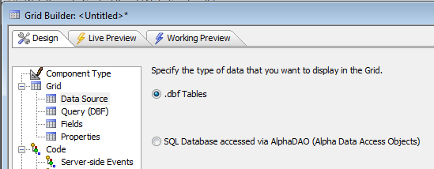
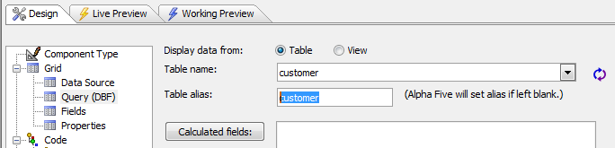
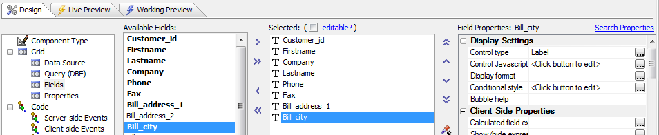
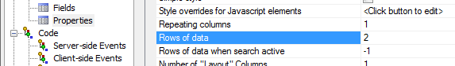
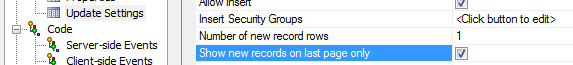
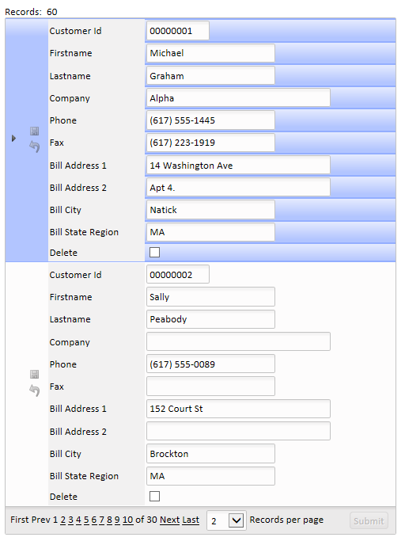

Creating a Grid that Looks Like a Dialog
|
Procedure:
1. Open the Web Projects Control Panel.
2. Click New > Web Component > Next > Grid > Next

3. This should load the Select Grid Component Template dialog, select the 'Start with a blank grid component' radio button and hit OK.
4. The Grid Builder Dialog page will appear. From the Grid Layout menu select Form (Columnar). Also make sure to click the Updateable radio button, otherwise the update settings option will not appear under Grid.
5. From the Grid tree on the right hand side of the Grid Builder select Grid > Data Source. A page will appear where you will be asked to select the appropriate data source for your application (in this example we selected Alpha Anywhere .dbf Tables ).

6. From the grid tree select the Grid > Query page. Under 'Display data from' select the table or view that is providing the data. Also select a Table name: (in this example we selected "Customer" from the Table Name list).

7. Display the Grid > Fields page.
8. Select and format the fields you wish to display. Use the arrows between the 'Available Fields' list and the 'Selected' list to select fields. You can choose the formats you would like for each field under Field Properties.

9. Go to the grid tree and Select the Grid > Properties page.
10. Change the value in the Layout Options > Rows of data property to 2.

11. Go to the Grid > Update Settings page under the Grid tree menu. This option will only be visible if you clicked on 'Updatable' under Component Type.
12. Change the value in Permissions > Number of new record rows property to 1.
13. Select the Permissions > Show new records on last page only check box.

14. Go back to the Grid > Properties page and change the value in the Layout Options > Rows of data property to 1.
11. Go to Live Preview tab at the top of the Web Builder Dialog. Select 'Full Preview'. The results should look something like the following.
